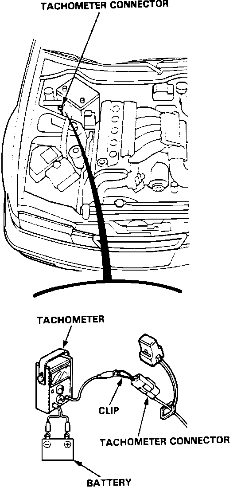
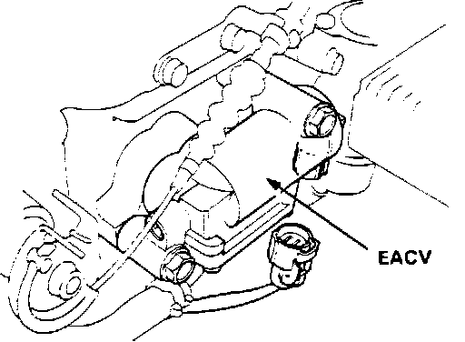
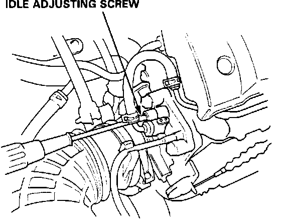

Computers and Control Systems: Adjustments
Idle Speed Inspection / AdjustmentNOTE: For Canada models, set the parking brake and ensure the headlights remain OFF.
1. Start the engine and warm it to operating temperature (the cooling fan comes ON).
Tachometer Connector:

2. Connect a tachometer.
3. Turn off the engine. Check that the throttle cable operates smoothly with no binding or sticking.
EACV Connector:

4. Disconnect the EACV connector.
5. Start the engine with the accelerator pedal slightly depressed. Allow engine speed to stabilize at 1000 RPM, then slowly release the throttle until the engine idles.
Idle Speed Adjusting Screw:

6. With all accessories OFF, adjust the idle screw until the tachometer reads:
550 +/- 50 RPM (Manual)
550 +/- 50 RPM (Automatic, Park position)
7. Turn ignition OFF.
8. Re-connect EACV connector.
9. Disconnect BACK UP fuse for 10 seconds to reset the ECU.
10. Restart the engine and allow to idle with all accessories OFF.
NOTE: For Canada models, set the parking brake and ensure the headlights remain OFF.
The engine idle speed should remain stable at:
700 +/- 50 RPM (Manual)
750 +/- 50 RPM (Automatic).
11. If engine idle speed is not within specifications, refer to COMPUTERIZED ENGINE CONTROLS.
12. Cold engine idle speed is not adjustable. If engine idle speed is not within specifications refer to COMPUTERIZED ENGINE CONTROLS.